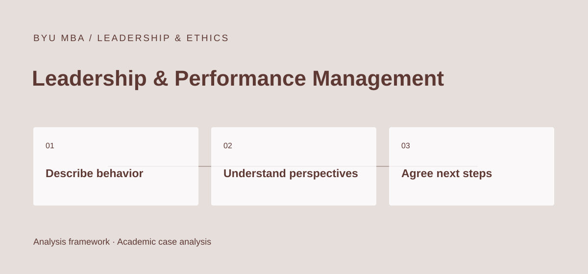

Academic case analysis · 2025
Leadership & Performance Management
An MBA case assignment examining leadership behavior, performance expectations, and how to conduct a difficult feedback conversation. The work used Mary Griffin at Derby Foods as the setting for evaluating managerial judgment.
- My role
- Individual case analysis
- Year
- 2025
- Work type
- Academic case analysis
- Focus
- Performance feedback · Difficult conversations · Leadership judgment

Case focus
The assignment examined Simon York’s leadership behavior and Mary Griffin’s feedback conversation. My analysis considered how a manager can address behavior and performance while recognizing that each participant may understand the situation differently.
Analytical approach
The coursework connected performance management with the Difficult Conversations framework: what happened, feelings, and identity. That structure provides a way to separate observable events from interpretations and to consider why feedback can be difficult to give or receive.
Analysis summary
| Conversation element | Management question | Purpose |
|---|---|---|
| Observations | What behavior can be described specifically? | Establish a concrete basis |
| Perspectives | How does each person understand the situation? | Identify differences in interpretation |
| Expectations | What needs to change? | Make the request clear |
| Follow-through | How will progress be reviewed? | Connect feedback to action |
Framework summarized from my preparation, analysis, and reflection.
Management application
A useful feedback discussion needs specific observations, a clear explanation of the concern, and room to understand the other person’s perspective. It should lead to a shared understanding of expectations and the next step.
What I learned
Leadership analysis becomes more practical when it identifies the conversation a manager needs to have. The case helped connect broader leadership judgments with the language, preparation, and follow-through required to address a concern.
Academic case: Mary Griffin at Derby Foods, Harvard Business School. This page presents my coursework summary, not a client engagement.